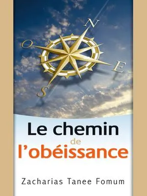

01
communauté
Une famille de disciples engagés à vivre pour le Seigneur Jésus-Christ, unis par un même but : porter Ses intérêts.
Chercher le Seigneur Jésus-Christ, Le connaître, L'aimer et Le servir, tel est notre crédo. Ayant trouvé en Lui un trésor sans prix, nous avons choisi d'investir nos vies pour Sa gloire, ici en Picardie et jusqu'aux extrémités de la terre.
Une famille de disciples engagés à vivre pour le Seigneur Jésus-Christ, unis par un même but : porter Ses intérêts.
Un mouvement qui forme et envoie des disciples dans le monde entier, en réponse à la Grande Commission (Matthieu 28:19-20).
Nous reconnaissons Jésus-Christ comme le seul chemin du salut et cherchons à Le placer au centre de chaque domaine de nos vies.
Nous portons les nations dans nos cœurs et désirons apporter Christ partout où règnent encore le péché et des vies sans Lui.
L'Assemblée de Maison est bien plus qu'une réunion : c'est un lieu de communion, de prière et de croissance spirituelle. Comme l'Église primitive, nous nous retrouvons dans nos foyers pour nous encourager, méditer la Parole et fortifier notre foi. Là où deux ou trois sont réunis en Son nom, Dieu est présent.
En savoir plusNos semaines sont organisées autour de l'enseignement du mercredi. Comme la Bible le dit dans Actes 2:42, il s'agit là d'un des principaux vecteurs de croissance pour celui qui a choisit d'être disciple du Seigneur Jésus-Christ. Ces moments d'enseignement sont consacrés aux fondamentaux de la vie chrétienne. Voici les points clés des dernières sessions 👇
Comment croître dans sa nouvelle vie — partie 3.
Lire le résumé →Comment croître dans sa nouvelle vie — partie 2.
Lire le résumé →Comment croître dans sa nouvelle vie — partie 1.
Lire le résumé →La série « Le Chemin Chrétien » de Zacharias Tanee Fomum accompagne pas à pas chaque disciple : de la nouvelle naissance à l'obéissance, de la sanctification au combat spirituel, jusqu'à l'amour pour le Seigneur. Treize livres pour bâtir sa vie sur le roc — à lire seul, en famille ou en Assemblée de Maison.

Tome 2Un rendez-vous vivant pour plonger ensemble dans la Parole de Dieu et découvrir comment le Seigneur transforme des vies. Explorez les trésors des Écritures, recevez une lumière nouvelle pour votre quotidien et repartez avec une foi fortifiée.
Je m'inscris !Retrouvez les points clés et messages essentiels partagés lors de nos cultes spéciaux — une belle manière de rester connectés à ce que Dieu fait au milieu de nous.
« On ne met pas du vin nouveau dans de vieilles outres. » — Matthieu 9:17
Pour recevoir pleinement la grâce et l'Esprit du Seigneur, nous devons nous laisser renouveler par Lui.
Lire la newsletter →« Dieu prouve son amour envers nous… » — Romains 5:8
Alors que nous étions encore pécheurs, Christ est mort pour nous : voilà la mesure de l'amour de Dieu.
Lire la newsletter →« Il récompense ceux qui le cherchent. » — Hébreux 11:6
Une foi vivante et active, nourrie de repentance, d'obéissance et d'amour, qui transforme notre quotidien.
Lire la newsletter →À Amiens et dans toute la Picardie, nous vivons la foi en églises de maison. Nos assemblées locales se rassemblent régulièrement pour un culte commun, et lors de grands rendez-vous, toutes les églises de maison de France se retrouvent pour un culte national.